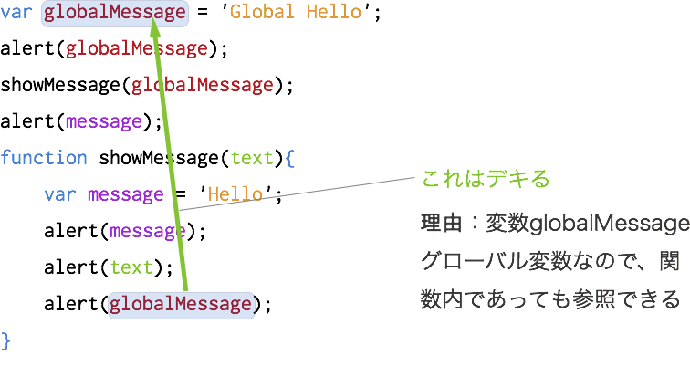
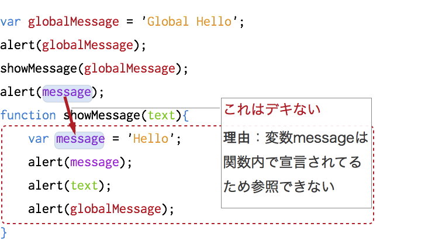

先程変数について説明しましたが、この章では、JavaScriptでの変数について抑えておくべき２つのポイントについて解説します
Titanium Studioで新規プロジェクト作成後に生成されるapp.jsに以下の様なコードを書いたとします。
var globalMessage = 'Global Hello';
alert(globalMessage); // (1)
showMessage(globalMessage); // (2)
alert(message); // (3)
function showMessage(text){
var message = 'Hello';
alert(message);
alert(text);
alert(globalMessage);
}
(1)から(3)の処理はそれぞれ以下のようになります
変数globalMessageは、グローバル変数のためどこからでも参照することが出来ます。

一方、showMessage()という関数内で宣言されてる変数については、変数内では参照できますが、変数の外部からは参照できません。

変数を全てグローバル変数で宣言するとどこからでも参照できるため使い勝手が良く、多用してしまいたくなるかと思います。
裏を返すとどこからでも参照出来るということは、裏を返すと、自分が意図しない所でグローバル変数が違う値に変更される可能性も秘めているため、グローバル変数の利用は必要最低限に抑えたほうが良いかと思います。
JavaScriptの変数のスコープという概念について解説します。
ひとまず以下の様なサンプルコードがあったとします。
for(var i = 1; i < 6; i++){
var message = i + '!!!';
showMessage(message);
}
function showMessage(text){
alert(message);
}
このforループでのブロック内で、変数messageを宣言してます。Java などの言語では、if や for などの {} で囲まれたブロック単位で変数の有効範囲が決まってきますがJavaScriptには基本的にはそのような概念が存在しません。
そのため上記コードについては
var message;
for(var i = 1; i < 6; i++){
message = i + '!!!';
showMessage(message);
}
function showMessage(text){
alert(message);
}
と書くのと同じ意味になります。
また、JavaScriptでのこういうループ文のサンプルの場合に、変数カウンターとして利用する i の変数宣言をforループ内で行ってますが、これもループ外で宣言してるの同じになるため、最終的には以下のように書きます。
var message,i;
for(i = 1; i < 6; i++){
message = i + '!!!';
showMessage(message);
}
function showMessage(text){
alert(message);
}
var message,i;
var showMessage = function(text){
alert(message);
}
for(i = 1; i < 6; i++){
message = i + '!!!';
showMessage(message);
}